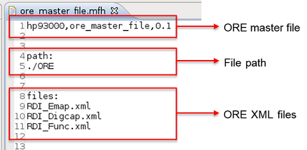

Using Offline Result Emulation in SmartRDI
SmartRDI supports the Offline Result Emulation (ORE) to evaluate test programs on offline base.
Offline Result Emulation
ORE supports the usage of defined test results in an emulation file and to return these results in an offline mode.
ORE is commonly used for:
- Verifying the test programs before the device is available
- Evaluating the test programs to detect different kinds of failures
Note Before using ORE, guarantee that your test program can be executed without any
error.
ORE master file
An ORE master file can contain several single ORE files to support collaborative development.
The format of an ORE master file is shown as follows:

The file path can be an absolute path or relative path. If it is a relative path, it is based on the current device directory.
You can specify the master file either in the ORE_FILE option in the RDI_Configure file or use the rdi.oreFile() command in your code. The latter setting will override the setting in the RDI_Configure file.
Testflow variable RDI_ORE_FILE
You can use this variable to specify an ORE file for each execution. There are two main ways
to change this variable:
- Change this variable value from an external production tool.
- Use SET_USER_STRING() to change this variable.
Example
ORE file locations must be loaded before RDI_INIT() in the first test
suite.
virtual void run()
{
static int i = 0;
string oreFile[4];
// Load ORE files before RDI_INIT() in the first test suite.
oreFile[0] = "./demo1.xml";
oreFile[1] = "./demo2.xml";
oreFile[2] = "./demo3.xml";
oreFile[3] = "./demo4.xml";
SET_USER_STRING("RDI_ORE_FILE", oreFile[i]);
RDI_INIT();
ON_FIRST_INVOCATION_BEGIN();
RDI_BEGIN();
rdi.emap("emap").label("funcPass").pin("DATA2").failCount(2).execute();
RDI_END();
i++;
ON_FIRST_INVOCATION_END();
cout<<"in run "<<i<<" , ore getFailCout result"<< rdi.id("emap").getFailCount()<<endl;
return;
}Functional changes
- Introduced in SmartRDI 2.5.0
- SmartRDI 7.5.1: ORE master file
- SmartRDI 7.5.2: Testflow variable RDI_ORE_FILE